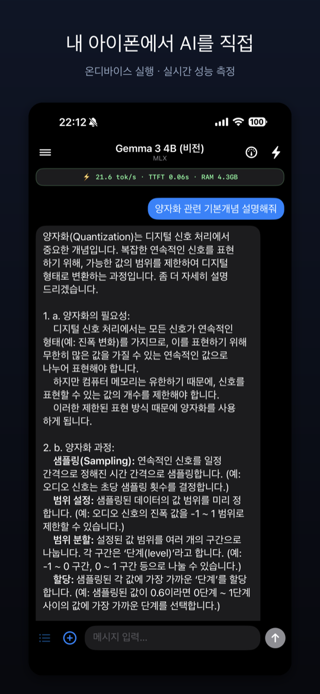
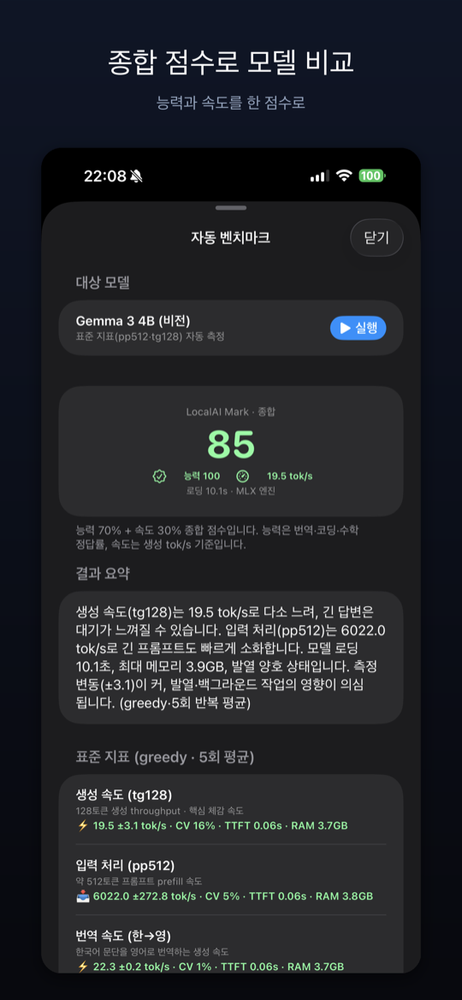
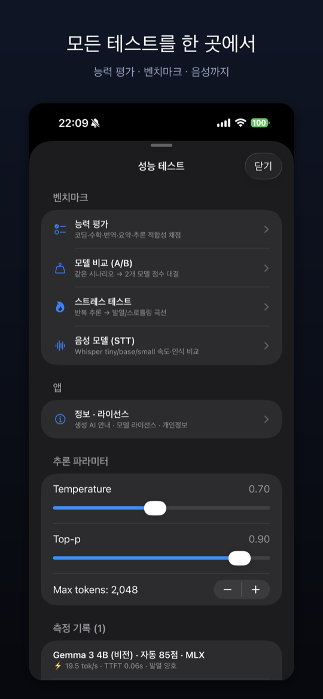
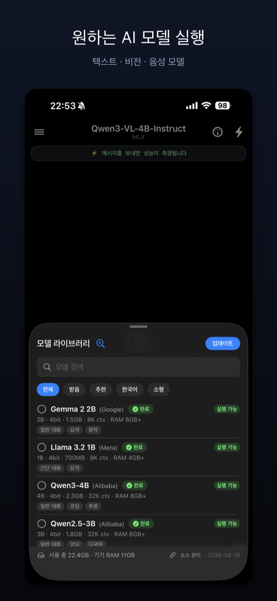
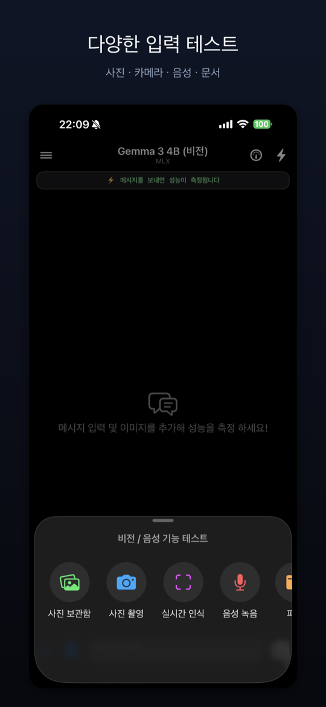
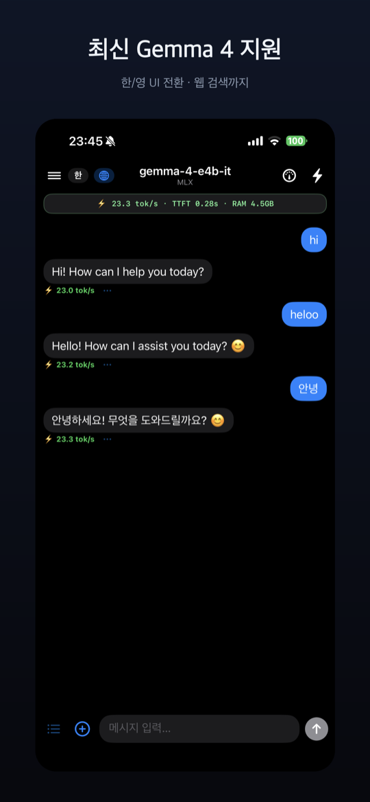

Local AI Bench
온디바이스 AI 성능·능력 벤치마크
App Store에서 다운로드새 소식v1.1.0
- Gemma 4 지원 — Google 최신 온디바이스 모델(E2B)을 받아 바로 실행·측정
- 🌐 웹 검색 — 켜면 위키백과 자료를 모델에 제공해 최신 정보 질문도 가능 (추론은 100% 온디바이스, 오프라인이면 자동 생략)
- 한/영 UI 전환 — 상단 토글로 앱 언어 즉시 변경
- 모델 다운로드 진행률·안정성 개선
앱 소개
클라우드 없이 아이폰에서 직접 AI 모델을 실행하고, 생성 속도·메모리·발열과 모델별 능력을 측정하는 온디바이스 벤치마크 앱입니다. 모든 처리는 기기 안에서 이루어지며 대화·이미지·음성은 외부로 전송되지 않습니다.






자주 묻는 질문
처음에 화면이 비어 있어요.
좌측 상단 ☰(모델 라이브러리)에서 AI 모델을 먼저 다운로드한 뒤 선택하세요. 빠른 확인은 Gemma 3 1B·Qwen3-0.6B 같은 작은 모델을 권장합니다.
추론이 동작하지 않아요.
온디바이스 추론은 실제 기기(아이폰)에서 동작합니다. 기기 메모리에 맞는 작은 모델부터 시도해 주세요.
모델 다운로드가 멈춰요.
네트워크 상태를 확인하고 다시 시도하세요. 이미 받은 파일은 이어받습니다.
AI 답변이 부정확하거나 부적절해요.
온디바이스 AI 모델이 생성한 결과로, 부정확할 수 있습니다. 앱에서 응답을 길게 눌러 신고할 수 있고, 아래 이메일로도 신고할 수 있습니다.
Gemma 4가 "실행할 수 없습니다"라고 나와요.
Gemma 4는 앱 1.1.0 이상에서 실행됩니다. App Store에서 최신 버전으로 업데이트해 주세요.
웹 검색을 켜면 대화가 외부로 전송되나요?
아니요. 검색어만 위키백과 공개 API로 질의하며 계정·식별자·대화 내용은 전송하지 않습니다. AI 추론은 항상 기기 안에서 실행되고, 오프라인에서는 검색을 자동으로 건너뜁니다.